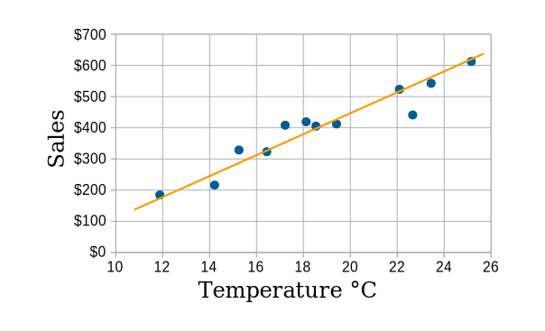
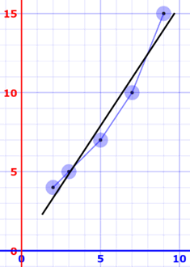
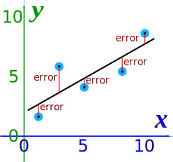
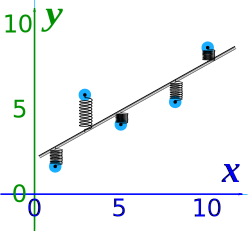
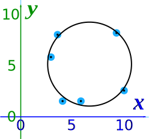

Least Squares Regression
Line of Best Fit
Imagine you have some points, and want to have a line that best fits them like this:

We can place the line "by eye": try to have the line as close as possible to all points, and a similar number of points above and below the line.
But for better accuracy let's see how to calculate the line using Least Squares Regression.
The Line
Our aim is to calculate the values m (slope) and b (y-intercept) in the equation of a line :
Where:
- y = how far up
- x = how far along
- m = Slope or Gradient (how steep the line is)
- b = the Y Intercept (where the line crosses the Y axis)
Steps
To find the line of best fit for N points:
Step 1: For each (x,y) point calculate x2 and xy
Step 2: Sum all x, y, x2 and xy, which gives us Σx, Σy, Σx2 and Σxy (Σ means "sum up")
Step 3: Calculate Slope m:
m = N Σ(xy) − Σx Σy N Σ(x2) − (Σx)2
(N is the number of points.)
Step 4: Calculate Intercept b:
b = Σy − m Σx N
Step 5: Assemble the equation of a line
y = mx + b
Done!
Example
Let's have an example to see how to do it!

Example: Sam found how many hours of sunshine vs how many ice creams were sold at the shop from Monday to Friday:
| "x" Hours of Sunshine |
"y" Ice Creams Sold |
|---|---|
| 2 | 4 |
| 3 | 5 |
| 5 | 7 |
| 7 | 10 |
| 9 | 15 |
Let us find the best m (slope) and b (y-intercept) that suits that data
y = mx + b
Step 1: For each (x,y) calculate x2 and xy:
| x | y | x2 | xy |
|---|---|---|---|
| 2 | 4 | 4 | 8 |
| 3 | 5 | 9 | 15 |
| 5 | 7 | 25 | 35 |
| 7 | 10 | 49 | 70 |
| 9 | 15 | 81 | 135 |
Step 2: Sum x, y, x2 and xy (gives us Σx, Σy, Σx2 and Σxy):
| x | y | x2 | xy |
|---|---|---|---|
| 2 | 4 | 4 | 8 |
| 3 | 5 | 9 | 15 |
| 5 | 7 | 25 | 35 |
| 7 | 10 | 49 | 70 |
| 9 | 15 | 81 | 135 |
| Σx: 26 | Σy: 41 | Σx2: 168 | Σxy: 263 |
Also N (number of data values) = 5
Step 3: Calculate Slope m:
m = N Σ(xy) − Σx Σy N Σ(x2) − (Σx)2
= 5 x 263 − 26 x 41 5 x 168 − 262
= 1315 − 1066 840 − 676
= 249 164 = 1.5183...
Step 4: Calculate Intercept b:
b = Σy − m Σx N
= 41 − 1.5183 x 26 5
= 0.3049...
Step 5: Assemble the equation of a line:
y = mx + b
y = 1.518x + 0.305
Let's see how it works out:
| x | y | y = 1.518x + 0.305 | error |
|---|---|---|---|
| 2 | 4 | 3.34 | −0.66 |
| 3 | 5 | 4.86 | −0.14 |
| 5 | 7 | 7.89 | 0.89 |
| 7 | 10 | 10.93 | 0.93 |
| 9 | 15 | 13.97 | −1.03 |
Here are the (x,y) points and the line y = 1.518x + 0.305 on a graph:

Nice fit!
Sam hears the weather forecast which says "we expect 8 hours of sun tomorrow", so he uses the above equation to estimate that he will sell
y = 1.518 x 8 + 0.305 = 12.45 Ice Creams
Sam makes fresh waffle cone mixture for 14 ice creams just in case. Yum.
How does it work?
It works by making the total of the square of the errors as small as possible (that is why it is called "least squares"):

The straight line minimizes the sum of squared errors
So, when we square each of those errors and add them all up, the total is as small as possible.
You can imagine (but not accurately) each data point connected to a straight bar by springs:

Boing!
Outliers
Be careful! Least squares is sensitive to outliers. A strange value will pull the line towards it.
Use the App
Have a play with the Least Squares Calculator
Not Just For Lines
This idea can be used in many other areas, not just lines.

A "circle of best fit"
But the formulas (and the steps taken) will be very different!